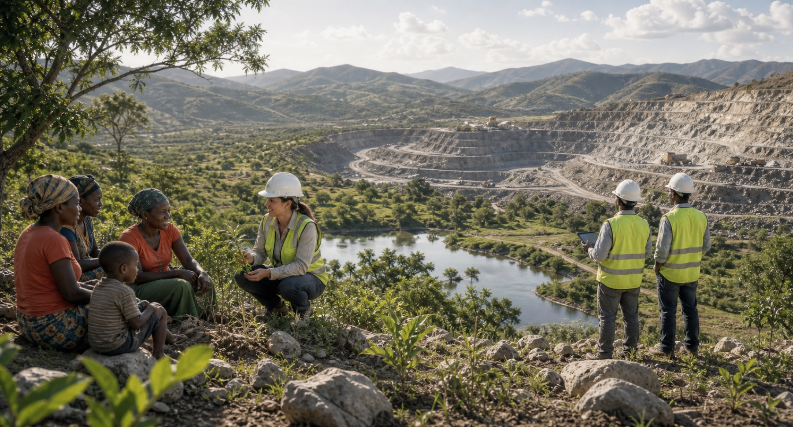
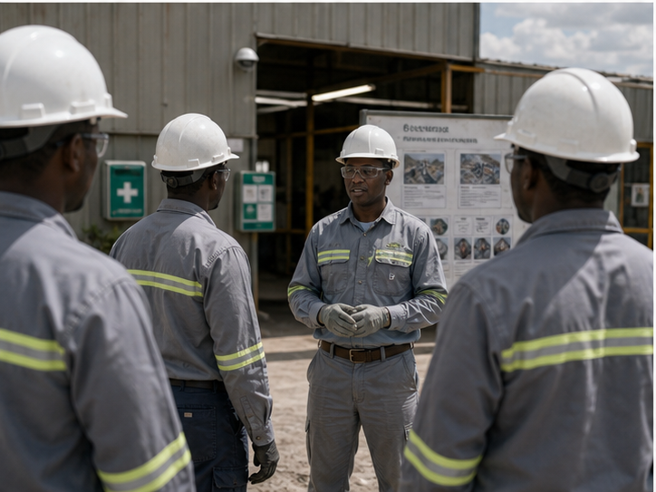
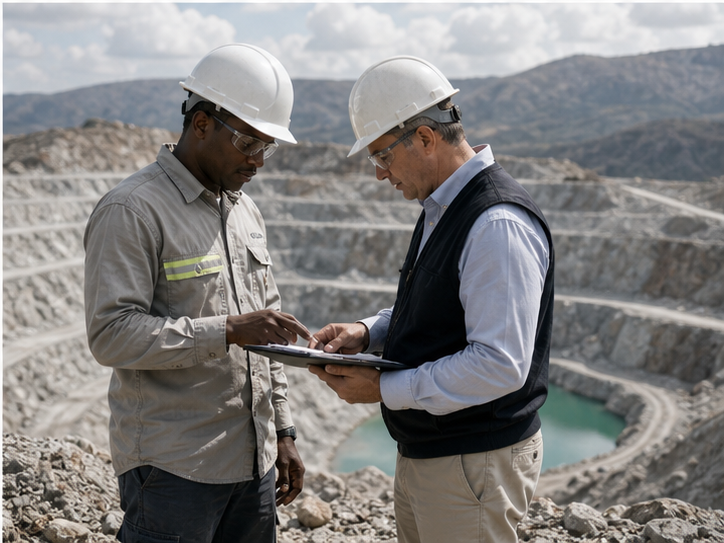

Community
We invest in local relationships through listening, employment pathways, skills development, and practical support that can create durable value beyond the life of any single project.

Sustainability ESG
We believe the value of a gemstone is strengthened by the way it is recovered, handled, and brought to market. Environmental care, workforce safety, community partnership, and governance discipline are integrated into operational planning so responsibility remains visible throughout the life of the business.
We invest in local relationships through listening, employment pathways, skills development, and practical support that can create durable value beyond the life of any single project.

Our environmental approach prioritizes measured land use, careful water and waste management, progressive site rehabilitation, and planning that reduces long-term impact wherever possible.

Safety is reinforced through training, site procedures, equipment standards, supervision, and a daily culture that asks every team member to protect themselves and those working beside them.

Documented sourcing protocols, handling procedures, and internal controls help ensure that operational decisions are aligned with the standards expected by clients, partners, and future stakeholders.